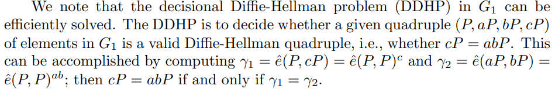

各式各样的DH
阅读《Identity-Based Chameleon Hashing and Signatures Without Key Exposure》一文时，遇到了Decision Diffie-Hellman Problem (DDHP)这一概念，头一次遇到，便搜索了一下，打算学习学习；没想到捅了老挝——一个DH密钥交换算法能衍生出各式各样的东东
没办法了，学吧
由于种种原因（我比较懒），目前只学DDHP，其他的先挖个坑
DDHP
论文里的描述

大致内容：在特定的群 $G_1$ 中，可以通过计算双线性映射的方式有效地判断一个四元组是否满足Diffie-Hellman条件
| 区别 | DH | DDHP |
|---|---|---|
| 目的 | 用于密钥交换，建立安全通信 | 判断给定值是否符合Diffie-Hellman关系 |
| 功能 | 生成共享密钥 | 验证一个数值是否是由特定的私钥生成的 |
| 安全性基础 | 基于离散对数的困难性，安全性与密钥长度和生成元选择有关 | 直接依赖于离散对数问题的安全性，特别是在无法计算 $g^{ab}$ 的情况下 |
代码展示
（有点草率，但是感觉思想很到位）
1 | # 假设我们已经有 A、B 和一个待验证的 C |
结合双线性映射
问题描述
给定四个元素$(P,aP,bP,cP)$，其中：
$P$ 是群中的生成元
$aP$ 和 $bP$ 是两个通过标量乘法得到的公钥
$cP$ 是待验证的值
DDHP的目标是判断 $cP=abP$ 是否成立
解决步骤
- 计算双线性映射
判断条件
若$\gamma_1=\gamma_2$，则可以确认 $cP$ 是有效的Diffie-Hellman四元组，即 $cP = abP$
本博客所有文章除特别声明外，均采用 CC BY-NC-SA 4.0 许可协议。转载请注明来源 coperlm's Blog！
相关推荐
.gif)
2024-09-07
Chameleon Hashing and Signatures阅读笔记
文献简介标题：Chameleon Hash and Signatures 作者：Hugo Krawczyk , Tal Rabin 期刊：无 年份：1998 重要程度：4 摘要 引入变色龙签名，提供不可抵赖签名（和常规数字签名一样） 不允许接收方在未经允许的情况下向第三方披露明文（和不可抵赖签名相关，但是算法简单和高效实现） 本质上不交互，不涉及零知识证明的设计和复杂性（传统不可抵赖签名基于零知识证明）。哈希函数的产生通过标准的hash then sign 此哈希函数...
.gif)
2024-09-25
SM2椭圆曲线加密算法学习笔记
此文章用于记录笔者对于SM2椭圆曲线加密算法的学习 前置知识ElGamal离散对数密码体制 公钥密钥生成 Alice首先构造一条椭圆曲线 $E$，在曲线上选择一点 $G$ 作为生成元，$n$ 为 $G$ 的阶（且 $n$ 必须为质数)。此时构成了一个循环群 $$。 Alice选择一个私钥 $k (k < n)$，生成公钥 $Q = kG$ Alice将公钥组 $(E,Q,G)$ 发送给Bob 加密过程 Bob收到信息后，将明文编码为 $M$，$M$ 为曲线上一点，并选择一个随机数 $r$（$r < n$，$n$ 为 $G$ 的阶） Bob计算点 $Cipher_1$ 与 $Cipher_2$ 即两段密文，计算方法如下 $Cipher_1 = M + rQ\ Cipher_2 = rG$ Bob把 $Cipher_1$ 和 $Cipher_2$ 发给Alice 解密过程 Alice收到密文后，为了获得 $M$，只需要 $Cipher_1 - k · Cipher_2$，因为 $Cipher1 - k*Cipher2 = M + rQ - krG...
.gif)
2025-04-24
katz密码学教材v3阅读笔记
本篇笔记用于记录阅读 introduction to modern cryptography (3rd Edition) 一书的阅读 重点在于公钥密码部分 本文尽量通俗讲解，但是不能代替阅读原著 目录第一章介绍了一些引入，包括公钥加密，历史和现代密码学设计原则 第二章介绍了一些完美加密，也算引入部分（还有信息论的香农定理，很前段时间读论文在[OB22]遇到了） 以上是第一部分，用于引入 第三章介绍了对称加密，然后我打算跳了~ 第四章讲消息认证码MAC（等我有钱了也要买MAC（不是这个mac）） 第五章讲CCA安全，CCA也就是选择明文攻击 第六章讲哈希函数，目录看起来是区块链的基础（有默克尔树之类的） 第七章讲流密码之类的~不懂，后面再看看 第八章是...
.gif)
2024-09-27
公钥密码学经典方案30篇 学习笔记（初次阅读）
本文是 荔枝橙味拱腰觅马糕守 一文的后继，主要内容是对于 方案构造学习 一章中的 尝试发现方案构造错误 一节下的 30个经典方案的学习笔记 经过初次阅读尝试，发现笔者英文阅读能力较低，不足以在短暂时间内完成大量论文的阅读；故选择了在翻译器和人工智能的帮助下来进行阅读，以提升效率，并为第二次阅读打好基础 1984, A Public Key Cryptosystem and a Signature Scheme Based on Discrete Logarithms. [34]引言1976年，Diffie和Hellman首次提出了公钥密码的概念，并依赖离散对数问题和素数域上的计算复杂性来构造其密钥交换协议。ElGamal的工作正是基于这种思想，进一步提出了一个可以实现消息加密和解密的公钥加密系统，以及一个数字签名方案。 公钥密码系统公钥密码体制的基本思想是使用 Diffie-Hellman 密钥交换的基础 首先，通信双方选择一个大质数 $p$ 和生成元 $g$ ，这些参数都是公开的 然后双方分别选取自己的私钥（分别是 $x_A$ 和...
.gif)
2024-09-04
后量子密码-LWE问题
LWE(Learning With Errors)问题，基于格 问题简化： 密码向量：设一个位置的秘密向量 $s\in\mathbb{Z}_q^n$ （$\mathbb{Z}_q^n$是模 $q$ 的整数环，$n$ 是向量的维度） 线性方程组：给定一系列的线性方程 $ai⋅s+ei\ (\mod q\ )$，其中 $a_i\in\mathbb{Z}_q^n$ 是已知的随机向量，$e_i$ 是从某个噪声分布中抽取的小整数噪声。 目标：给定这些方程（即给定多个 $a_i,b_i=a_i\cdot s+e_i$ 对），求解秘密向量 $s$。
.gif)
2024-09-24
基于SM9的属性基在线离线签名方案 论文阅读总结
本文用于记录 本篇论文 的阅读和知识总结与学习 前置内容关键词SM9;在线/离线签名;属性基签名;随机谕言机模型;q-SDH 问题 SM9算法基于双线性对，可以实现属性基加密签名 相对而言，SM2基于椭圆曲线，无属性基相关属性 在线/离线签名在线签名在服务器（可信的）等设备上进行，离线签名在轻量级设备上；离线签名在在线签名的基础上进行签名，可以减少轻量级设备的运算开销 随机谕言机模型可以视为一个安全的哈希函数 q-SDH 问题多个参与者的DH密钥交换，而且更强，而且抗量子 预备知识双线性映射给定安全系数 $\kappa$，生成一个双线性元组 $BP=(G_1,G_2,G_T,e,p)$ 令 $P$ 是 $G_1$ 的一个生成元，令 $Q$ 是 $G_2$ 的一个生成元，一个双线性映射 $e:G_1\times G_2\rightarrow G_T$ 有：双线性 非退化性 可计算性 三个性质 此外，在 $G_1$ 和 $G_2$ 之间存在一个能有效且能公开计算的同构映射 $\psi:G_2\rightarrow G_1$ ，即...
评论
WalineDisqus
.gif)
.gif)
.gif)
.gif)
.gif)